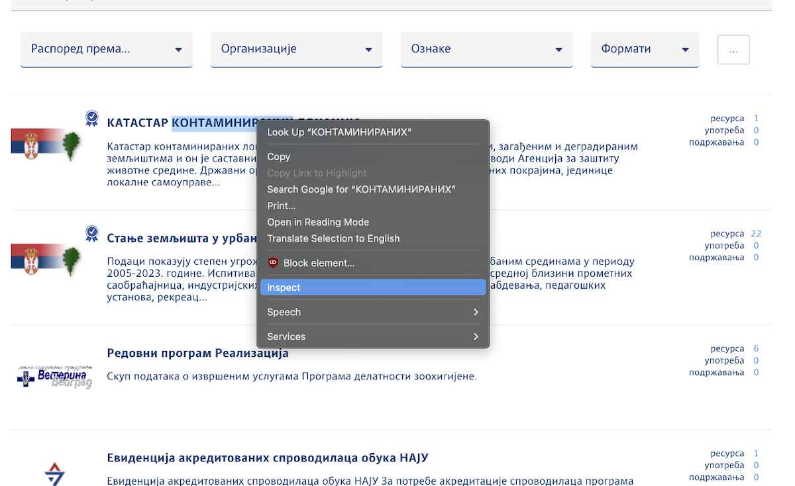
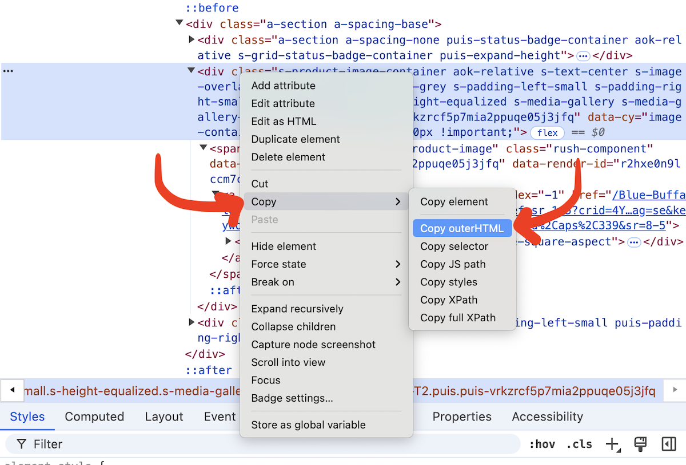

Scraping
Playwright is a great library for scraping data in Python.
Session content
Code and data
This morning you will create your own notebooks!
Slides
- Scraping slides
- Data cleaning sides (from yesterday’s slides)
Homework
Homework will be posted later.
Setup
Playwright is installed using pip. It also needs many other tools to make sure our code will work. Please run the code below in a Jupyterlab Desktop notebook cell:
%%python -m pip install lxml html5lib beautifulsoup4 pandas
%%python -m pip install --quiet playwrightIf that does not work, you can also try this:
%pip install lxml html5lib beautifulsoup4 pandas
%pip install --quiet playwrightThen we need to install web browsers for Playwright to use:
!playwright installIf you use Windows, you also need to few more lines to make Playwright work in Jupyter.
%%python -m pip install --quiet "ipykernel==6.28.0"
get_ipython().kernel.do_shutdown(restart=True)Completed work
Completed notebooks will be posted after class.
Additional links
- Scraping with Playwright, a video
Guide
Getting basic code
You can get basic code by using !playwright codegen. It will launch a browser that will record everything you do in it.
Inspecting our pages
Opening the web inspector
Right-click (or command-click) to bring up the menu, then select Inspect (I think it is 検証 in Japanese Chrome). It might be slightly different if you aren’t using Chrome!

Using the web inspector
Move your mouse around on the code on the right.
Getting the code
To get the HTML code for part of the page, first find it using the Web Inspector. Then right click, Copy, Copy outerHTML. You can paste this into ChatGPT to help write your scraper.

Writing your scraper
Use this custom prompt or this other custom prompt to see if you can put together a scraper! We’ll walk through it several times in class.
Our example we’ll use is Apraisal Companies from https://ia-plb.my.site.com/LicenseSearchPage
AI Prompts
The two prompt examples are: